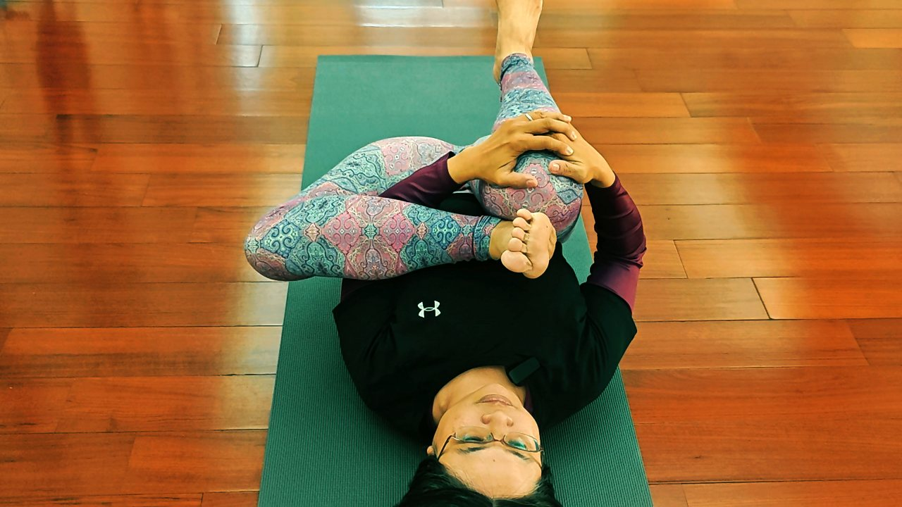
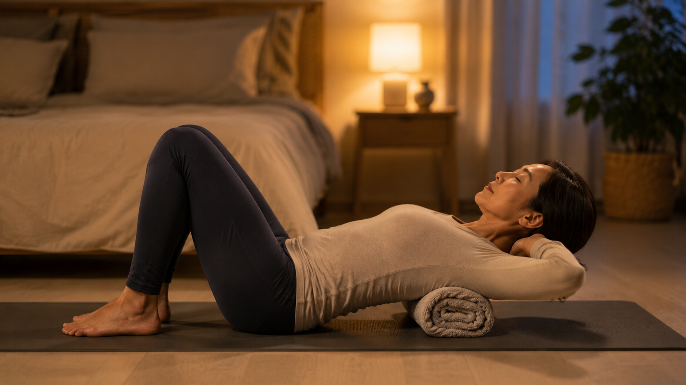

睡前 5 分鐘，讓拱起來的背慢慢躺平

- 忙碌一整天躺上床，上背浮空、肩膀懸起貼不到床面，是因為白天向前縮窄的胸廓與後凸的胸椎還處於「防禦性僵直狀態」。
- 整天久坐促使胸小肌與腰大肌持續短縮，平躺時下背被向前上方拉扯，深層豎脊肌為了防止骨骼失穩而發生等長痙攣。
- 放鬆關鍵在於「解開前側枷鎖、承托後側浮空」：先以毛巾捲溫和支撐胸椎（T4–T8），屈膝踩床卸除腰大肌張力。
- 配合橫膈膜 4 秒吸氣、6 至 8 秒慢吐氣，興奮迷走神經傳導，讓自律神經在 5 分鐘內安全切換至副交感修復模式。
結束了長達八至十小時的電腦辦公或通勤奔波，好不容易洗完澡倒在床上，你是否常有這種體感：明明身體極度疲憊，後背卻像一塊堅硬厚重的石板，肩膀兩側懸空浮起、無論怎麼翻身都無法緊密貼合床面？甚至連深吸一口氣，都覺得前胸被緊緊束縛、胸骨沈重難以擴張。這絕非單純的心理壓力，而是白天那具向前蜷曲、抗衡重力的身體骨骼，至今依然處於神經系統的防禦緊繃之中。睡前花 5 分鐘，透過一條毛巾的物理支撐與神經反射引導，就能讓拱起的脊椎一節一節自然沈降。
為什麼忙了一整天躺平，背部卻像懸空石板一樣硬？
在人體生物力學中，人體脊椎具有天然的生理曲度：頸椎前凸、胸椎後凸、腰椎前凸與薦椎後凸。然而，當我們整天對著螢幕打字或低頭滑手機時，頭部每往前移一英吋，頸椎深層肌群就要承受多達數倍的負載，胸腔被迫陷入「胸椎過度後凸（Hyperkyphosis）＋肩胛骨前引下沉」的被動閉鎖狀態。
在此力學鏈條下，前側的胸大肌與胸小肌長時間維持短縮痙攣，宛如兩條拉緊的鋼索把兩側肩膀往胸骨中心向內收扣；上背部的菱形肌、中下斜方肌則處於持續被離心拉長的疲勞竭盡狀態。更關鍵的是，整天屈膝久坐使得人體最強大的屈髖肌——腰大肌（Psoas Major）深層縮短。當你於夜間突然仰臥伸直雙腿躺平時，短縮的腰大肌會如同弓弦般，將五節腰椎往前上方強行拉扯，造成骨盆前傾、下背部明顯空出一大塊縫隙。
| 狀態與位置 | 白天久坐辦公狀態 | 夜晚仰臥平躺狀態（未放鬆前） |
|---|---|---|
| 胸廓與前胸肌群 | 胸小肌短縮、胸骨凹陷、呼吸淺快限制於鎖骨 | 前胸拘役未解，雙肩無法向外下沉貼平床面 |
| 胸椎與上背肌群 | 胸椎後凸卡死，小面關節處於外展開位 | 背部中段隆起，呈「硬殼拱背」無法均勻承重 |
| 腰椎與腰大肌 | 雙腿屈曲坐姿，腰大肌深層向內回縮鈍化 | 雙腿伸直拉扯腰椎懸空，深層豎脊肌防禦性抽筋 |
| 自主神經狀態 | 交感神經高度亢奮，心率與肌張力維持高檔 | 缺乏安全骨骼反作用力支撐，大腦難以切入副交感 |
躺姿生物力學失衡：腰大肌牽拉與胸腰筋膜防禦性抽筋
許多人以為「躺在軟床上就能完全放鬆」，然而床墊的被動彈性往往無法解決人體內部筋膜張力的牽扯。當腰大肌將腰椎拉高懸空時，人體深層的本體感覺受器（Mechanoreceptors）會立即向中樞神經系統發出警訊：「腰椎處於力學懸空狀態，缺乏骨骼支撐，周圍神經與椎間盤正面臨剪切力風險！」
大腦為了自我保護，會立刻下達緊急命令，啟動包裹整個下背部的胸腰筋膜（Thoracolumbar Fascia）與豎脊肌群進行「防禦性等長攣縮（Protective Guarding Spasm）」。這正是為什麼你越想用意志力讓背部沉下去，背部肌肉反而繃得越緊、越躺越痠痛的真正根源。要解除這層神經痙攣，我們不能用蠻力強壓下背，而必須透過精準的擺位與外力支撐，主動拆解腰大肌與胸小肌的張力扣環。
背部躺不平不是背肌無力，而是前側胸廓拘役與下肢腰大肌緊縮共同製造的連鎖代償。先解除前側的張力拉扯，後背的肌肉才有空間放鬆沉降。
睡前 5 分鐘毛巾捲被動開胸法：擺位、高度與自律神經引導
準備一條一般厚度的純棉沐浴中毛巾，將其緊密捲成直徑約 8 至 10 公分的圓柱狀長捲。這個厚度剛好能夠溫和承托胸椎小面關節，同時不會引起頸椎過伸或腰椎擠壓。

步驟一：精準擺放毛巾於胸椎 T4–T8 區間
坐在床上，將毛巾捲橫放於身後。慢慢仰躺下去，讓毛巾捲精準墊在兩側肩胛骨的中下緣連線處（大約在女性內衣後扣帶、或是胸口正中央膻中穴正後方的脊椎高度）。切記：毛巾絕對不能墊在腰椎懸空處，也不能頂在頸椎下方！讓毛巾成為胸椎第 4 節至第 8 節的穩定支點，利用地心引力讓兩側肩胛骨順著毛巾兩側自然下垂展開。
步驟二：雙膝屈曲踩床，關閉腰大肌張力
躺下後請務必將雙膝彎曲約 90 度，雙腳平踩在床面上，雙膝與臀部同寬。這個簡單的屈膝動作，能立刻讓骨盆向後微幅旋轉，腰大肌瞬間縮短卸載，下背部便能立刻順利貼平床面，解除胸腰筋膜的防禦警報。如果床墊偏軟，也可以在膝窩下方墊一顆厚抱枕代替踩床。
步驟三：手臂展開呈「仙人掌式」或大字型
將雙手臂向身體兩側平展，手肘彎曲 90 度呈仙人掌狀（或手心向上自然張開成 45 度）。此時前胸短縮的胸小肌會受到溫和而持續的被動牽引，肋骨外側的肋間肌逐漸舒展開來，為肺葉下部的縱向擴張創造物理空間。
步驟四：橫膈膜 4-6 長吐氣，活化迷走神經
閉上雙眼，開始引導呼吸：吸氣時用鼻子緩慢吸氣 4 秒，將氣息沉入腹部與兩側下肋骨，感受肋排向外立體擴張；吐氣時用嘴巴或鼻子緩慢吐氣 6 至 8 秒，並在腦海中想像上背部的豎脊肌如同融化的冰塊一般，沿著毛巾捲向床面兩側緩緩流淌沈澱。長吐氣能有效刺激分佈於橫膈膜周圍的迷走神經（Vagus Nerve），抑制交感神經亢奮，引導心率放緩、血壓穩定，進入適合入睡的修復頻率。
| 關鍵操作細節 | 正確做法（標準安全姿態） | 常見錯誤代償與潛在風險 |
|---|---|---|
| 毛巾擺放高度 | 精準橫置於胸椎 T4–T8（肩胛骨中下緣） | 墊在腰椎懸空處（加劇腰椎前凸過伸夾擠） |
| 下肢擺位 | 雙膝微屈踩床或膝下墊厚枕卸載腰肌 | 雙腿伸直死板平貼（腰大肌拉扯腰椎浮空） |
| 頭頸中立對位 | 額頭與下巴維持水平，頸後自然放鬆 | 毛巾過高使下巴朝天朝後仰（壓迫枕下神經叢） |
| 呼吸節奏 | 4 秒深吸氣、6 至 8 秒長吐氣，不憋氣 | 短淺上胸聳肩呼吸（激發交感神經防禦警戒） |
躺平時的常見代償誤區：硬壓下背與頸椎過度後仰
在實際練習中，許多學員因為求好心切，常犯了以下兩個典型錯誤：
代償誤區一：腹部過度收縮，用力把腰部壓向床面。有人一發現腰部懸空，就拼命收緊腹肌想把下背「死命壓平」。這種主動出力會使腹直肌與髂腰肌再度陷入收縮，完全違背了睡前放鬆的神經生理原則。正確的方式是靠「雙膝彎曲」與「深長呼氣」，讓骨盆與腰椎借助重力被動貼合，而非肌肉主動硬壓。
代償誤區二：後腦勺未做適當支撐，導致下巴仰角過高。如果本身胸椎駝背嚴重、胸椎後凸弧度過大，仰躺在毛巾捲上時，頭部可能會過度向後仰，導致下巴朝天、頸椎後側被死死夾擠。若出現這種情形，請務必在後腦勺下方加墊一條折疊薄毛巾，使視線自然朝向天花板正上方，維持枕骨大孔與頸椎神經通道的暢通。
為什麼壁繩瑜伽能從根源解除白天累積的胸椎後凸卡死？
睡前的毛巾捲練習是極佳的「每日止損儀式」，能幫你把當天的緊繃重置歸零。然而，如果胸椎關節囊與前縱韌帶在白天八小時的不良姿勢下已經發生結構性僵固，單靠睡前 5 分鐘的微量被動放鬆，隔天一早坐在辦公桌前，身體依然會慣性縮回駝背體態。
這正是教室現場壁繩瑜伽能發揮關鍵突破的地方。壁繩透過專業骨盆帶與胸帶系統，提供精準的自重卸載牽引（Spinal Decompression）。在壁繩的懸吊支撐下，脊椎承擔的地心引力軸向壓力瞬間被分擔 30% 至 70%，胸廓得以在「零肌肉僵直代償」的無痛窗格中完成深層被動伸展；同時，老師能引導你藉由壁繩的剛性回饋，重新喚醒沉睡已久的下斜方肌與前鋸肌，將胸椎從過度後凸卡死的位置一步步校正歸位，讓脊椎在白天就能維持穩定的中立平衡，不再累積入夜的僵硬巨石。
紅旗警訊（Red Flags）：哪些背部夜間不適絕不能當成普通疲勞？
雖然多數背部躺不平源自姿勢與肌筋膜失衡，但夜間平躺時的背部症狀，也是許多重大內科與脊椎骨骼病變的警戒窗口。若在平躺休息時出現以下紅旗警訊，請務必暫停任何自主伸展，盡速前往醫院骨科、神經外科或內科接受精密影像檢查：
- 夜間靜止性劇痛（Night Pain）：白天活動時不痛，但夜間一平躺就出現深層骨骼抽痛或鈍痛，甚至在半夜被劇烈痛醒，且變換任何睡姿都無法緩解（需高度警惕脊椎骨髓炎、硬膜外膿瘍或脊椎腫瘤轉移）。
- 進行性神經壓迫徵象：下背痛合併單側或雙側下肢放射性麻木、刺痛、腳踝背屈無力（垂足），甚至出現排尿困難、大便失禁或會陰鞍區感覺麻木（急性馬尾症候群急症，需於黃金期內手術減壓）。
- 伴隨全身系統性症狀：背痛伴隨不明原因低燒、畏寒、數週內體重無故驟降超過 5% 以上，或本身具有癌症病史。
想知道自己的脊椎弧度與背部張力到底偏離多少？
AI 體態檢測在教室現場透過精密光學掃描，精準量化頭前傾、圓肩度與骨盆傾角數值，由資深老師當面為你解讀代償盲點，省去漫長的盲目摸索。
預約首次 NT$299 AI 體態檢測本文為體態結構衛教與運動力學知識分享，非醫療診斷或治療處方。若有劇烈疼痛、外傷或器質性病變，請先尋求復健科、骨科或物理治療師等醫療專業人員評估。
常見問題
為什麼白天久坐之後，晚上平躺時背部總覺得懸空且肌肉緊繃？
整天維持駝背與低頭姿勢時，胸大肌與胸小肌持續短縮，胸椎被迫過度後凸；而長時間屈髖使腰大肌緊縮，躺平時會將腰椎向前上方拉扯，形成背部中段浮空。此時深層本體感覺受器偵測到缺乏骨骼支撐，大腦會本能啟動豎脊肌與胸腰筋膜的防禦性等長抽筋，導致背部越躺越硬、無法完全沉向床面。
睡前使用毛巾捲被動開胸時，應當擺放在身體哪個確切位置？
建議將直徑約 8 至 10 公分的中型毛巾捲橫放於胸椎第 4 至第 8 節下方（約兩側肩胛骨中下緣連線、女性內衣後扣帶的高度）。切勿將毛巾直接墊於腰椎懸空處或頸椎後方，否則易造成腰椎過度前凸夾擠或頸椎壓迫。若躺下時下巴明顯向上翹起，可在後腦勺額外墊一條薄毛巾維持頸椎中立。
進行背部平躺放鬆時，為什麼強烈建議雙膝微屈踩床？
雙腿完全伸直平躺時，緊繃的腰大肌會牽拉腰椎產生前傾剪力，加重下背懸空感；將雙膝彎曲約 90 度並踩於床面（或在膝窩下方墊一顆厚抱枕），能立即解除腰大肌與股直肌的被動張力，讓骨盆維持微幅後傾的放鬆位置，使下背與腰椎平穩貼合床面。
睡前 5 分鐘背部放鬆與一般的用力拉筋有何本質差異？
睡前放鬆的核心是藉由重力與橫膈膜長吐氣誘導副交感神經接管，屬於低代謝的本體感覺重置；一般的用力拉筋若過度追求伸展極限或引發酸痛，反而會誘發交感神經興奮與肌肉牽張反射，造成肌纖維進一步繃緊與入睡困難。練習時全程應處於舒適且無痛的範圍內。
如果平躺時背部疼痛嚴重，有哪些紅旗警訊需要立刻就醫檢查？
若平躺時背部出現非姿勢性、在靜止休息時反而劇烈加劇的深層抽痛，甚至夜間頻繁痛醒，或伴隨不明發燒、體重急劇下降，需立即就醫排除脊椎感染、骨髓炎或腫瘤轉移；此外若合併下肢無力、麻木刺痛或大小便控制異常，可能為急性神經根壓迫或馬尾症候群，應盡速前往神經外科或骨科評估。